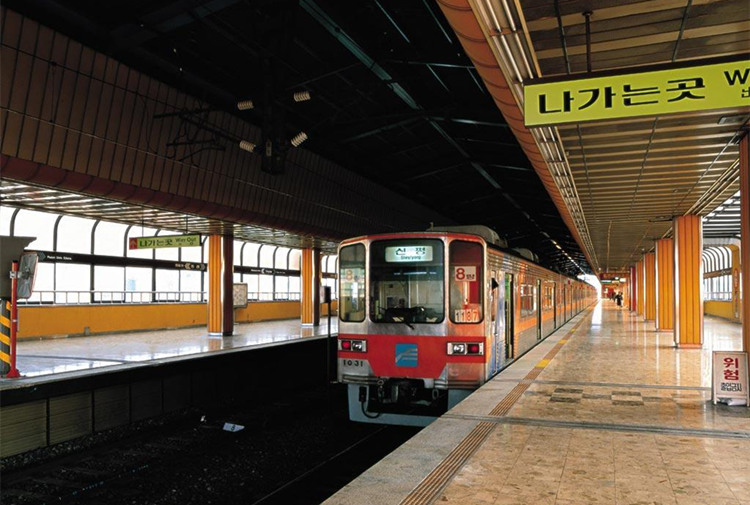

地铁
大部分自由行的游客到了韩国会选择乘坐地铁出行，方便快捷，而且地铁的重要换乘站、景点站会有中文报站，且站内会有中文标示，为很多不会韩语的自由行游客提供了方便。当然，距离不同，票价也是不同的。
10km内：成人价格1300韩元，青少年是1050韩元。
10km以上：成人票价1500韩元，青少年1200韩元。
定期票:一天4500韩元；7天20000韩元；1个月55000韩元。

图：地铁路线图
如欲取得更清晰的路线图/得到更多资讯，请查询以下网站。
网址：ditie.hanyouwang.com
车票可以在地铁里的自动买票机随时购买，当然有中文可以方便大家购买地铁票。

图：釜山地铁站
公共巴士
釜山市内客车分为普通客车、座席客车、区内客车等。前门上车，上车后通过侧面的收款箱或读卡机付费，使用现金时如果面值较大，不容易收回余钱，因此最好准备小额纸币或硬币。
乘坐客车时，用交通卡代替现金使用更为方便。下车前按墙上的响铃按钮，待客车在停车站开门后从后门下车。不过，座席客车一类只有单扇门的客车上下车均用前门。
刚来到韩国的人，可能不知道韩国的公交车下车时需要按铃，结果多坐了好几站。没错！在韩国乘坐公交车时，如果要下车，必须得提前按铃。
旅友到韩国时一定要记住：在要下车的那一站快到时，要提前按铃哦！

图：釜山公交车
出租车
釜山拥有在韩国各地随处可见的普通出租车、模范出租车和Call出租车、TIP出租车。
出租车的车身一般为银色或白色，模范出租车是黑色，两侧车门和车顶灯上贴有“模范出租车” 的标志。车内空间宽敞，在提供高水平服务的同时，收费也比一般出租车贵，起步价是3 公里4500 韩元，但不收深夜附加费。
一般出租车起步价是2 公里2，200 韩元。午夜0 点至凌晨4 点期间，费用会提高20%。
如果你等不到出租车，可以到周边的宾馆或是旅游服务中心请求帮忙叫车，叫车的话需多支付1，000 韩元叫车费。按距离和时间比例计费。现金、刷卡、交通卡都可以结算。
图：釜山出租车
观光巴士
釜山的巴士、地铁等大众交通很发达，但如果利用“市区游巴士”的话则可以更方便快捷的游览釜山的主要景点。釜山的观光名胜可在一天之内全部观赏到。
釜山市区游巴士的每个座位上都配备了多媒体设备，在旅游过程中，乘客可通过座位上的多媒体设备，获取各种旅游相关的图片、视频、漫画等信息，并且针对外国游客还提供韩文、英文、中文、日文语音服务。乘坐循环线路的话，每天只需购买一次车票，即可按照巴士的循环路线，在任意站点下车游玩，再乘坐下一班车，去其他景点观赏。
网上预订： www.citytourbusan.com
电话预订： ARS +82-1688-0098 （韩，英，日，中）
预约者车票领取：乘车时直接从司机处领取预约车票。
现场购买：未预约时，可在各停车处，按先后顺序在司机处购买。